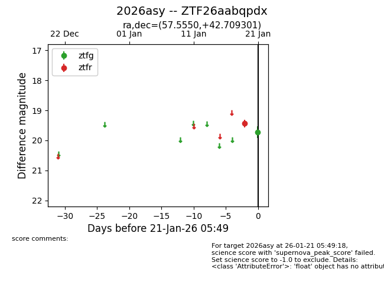
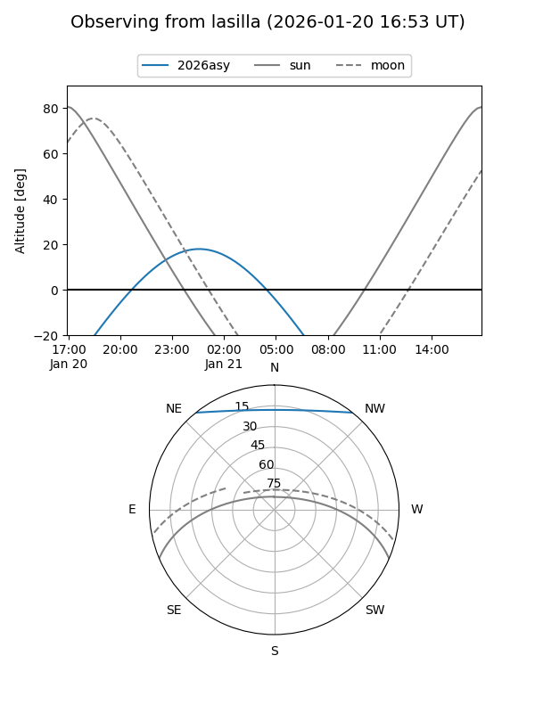
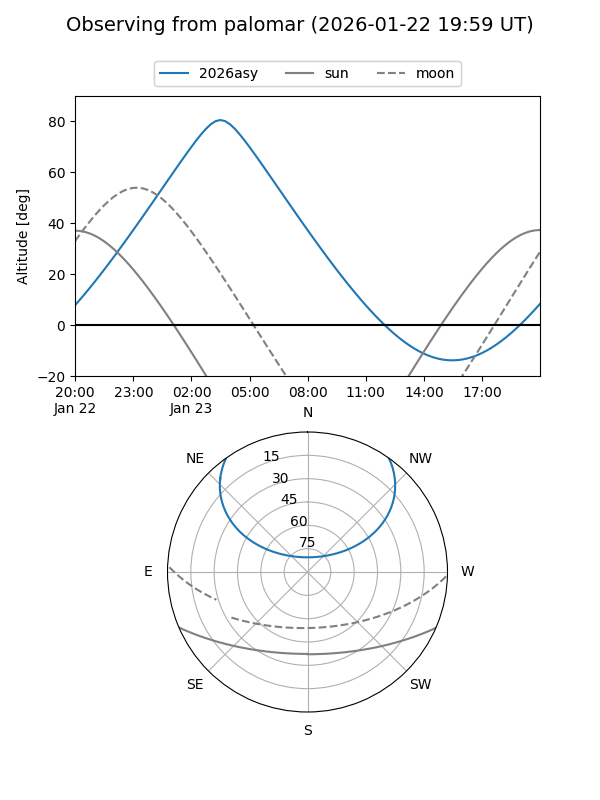

2026asy
Target 2026asy at 2026-01-23 05:56
Aliases and brokers:
FINK: link
Lasair: link
ALeRCE: link
TNS: link
YSE: link
alt names
ZTF26aabqpdx (ztf,fink_ztf)
2026asy (tns,yse)
Coordinates:
equatorial (ra, dec) = 57.5550,+42.70930
equatorial (HMS+DMS) = 03:50:13.21,+42:42:33.48
galactic (l, b) = (154.4783,-8.95107)
Flags:
Photometry:
last ztfg=19.73, ztfr=19.44
1 ztfg, 1 ztfr detections
Lightcurve

Visibility


Additional plots